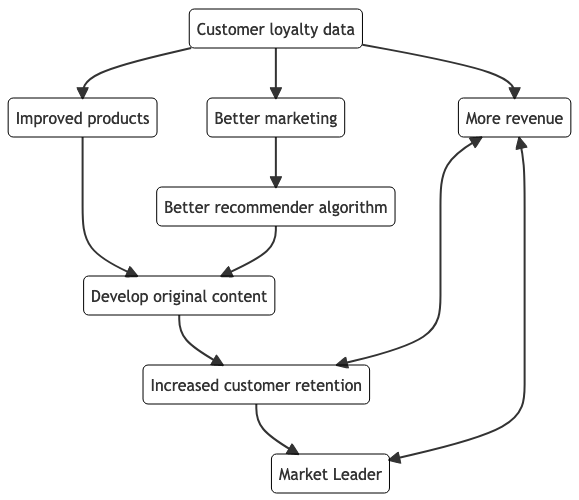
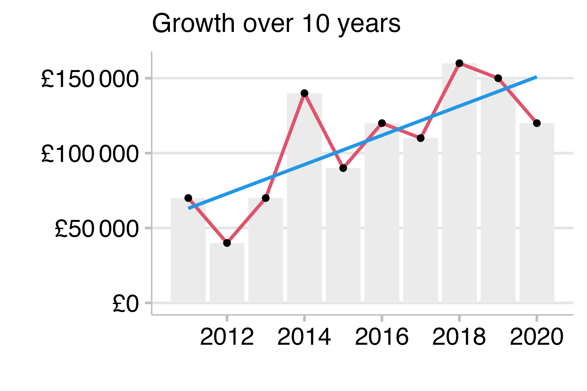
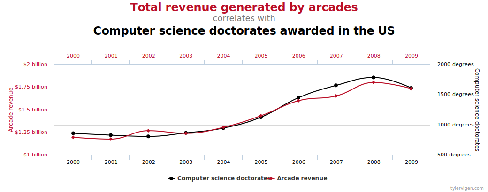
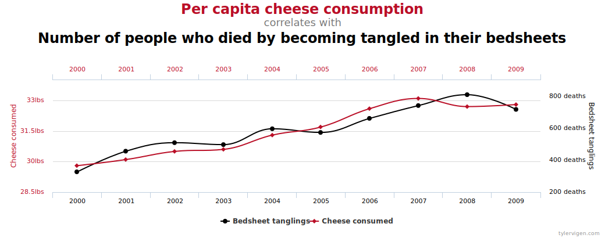
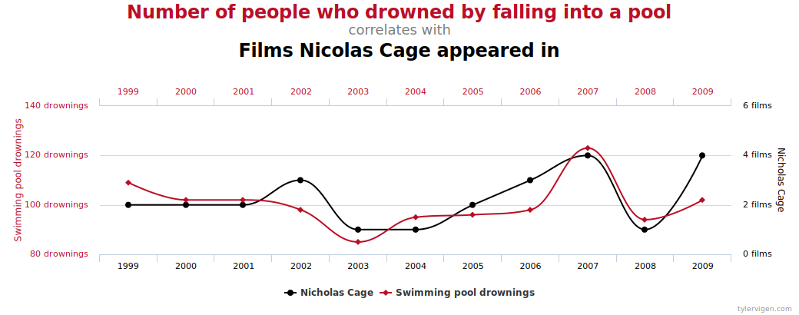
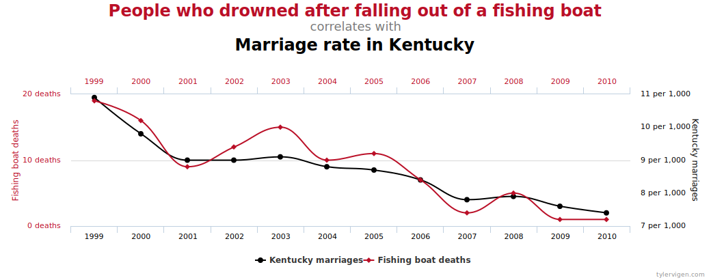

Embracing Uncertainty_
What do we mean by “Modelling”?
Learning outcomes
- Awareness of different types of model
- conceptual / descriptive / explanatory / predictive
- Understand that we can use models to represent system
- Understand that models are simplifications system
- Understand that we can incorporate uncertainty into our models
- Understand that models can be used to plan for different scenarios under different levels / types of uncertainty
- Create different responses depending on the likelihood of a particular outcome
Intro
Being told we should embrace uncertainty sound great in theory, but what does it mean in practice? If things are so uncertain, why try and plan for it; why not just wait and see what happens, then decide? Unfortunately, that is not really embracing uncertainty, it is just not doing anything! All uncertainty really means is that instead of not making plans, we plan for different contingencies. In this session we will use case studies to apply everything we have discussed so far to begin to see how we can prepare for uncertain events. In particular, we shall highlight whether uncertainty arises form our own lack of knowledge or understanding, whether in is a natural, and irreducible random component of our system, or whether it comes from inadequate data collection or handling.
We will begin by reading a case study together, during which we shall identify the places where different types of uncertainty show up. Different typed of model are useful for identifying and handling different types of uncertainty.
Types of model
Conceptual
Often looks like a flowchart or framework diagram. This type of model is a great place to start because it is often something we do automatically in our mind. Writing it down serves several purposes:
- It allows us to map aspects of our mental model to the system.
- Helps identify any faults in our mental model.
- Helps us to clarify the messier components of the system.
- Provides a common reference for other team members.
The process might start with a mind-mapping process, but, after several iterations, the finished model is more polished.

One of the most useful things about this is that it allows us to explicitly identify those sources of uncertainty that we genuinely can do nothing about. For example we can highlight the sources of random fluctuations in the system. Perhaps an even more useful application of for helping us to realize where the bound of our own knowledge lie. It can sometimes be easy to think we have a good understanding of or system. However, this is just a way of strengthening our preconceived ideas and biases. Once we go through the process of creating our model / framework we are able to reassess both our system and our knowledge of it. An importance point to realise is that this is not a static process. Our systems, our data, and our own understanding all change over time, and the only way we can keep on top of these changes is by continuously revisiting them.
A related and similarly and useful idea is to model the flow of data through the system

Descriptive model
What’s the difference between the “conceptual” model above and a “descriptive” model? Depends on who you ask. Four our purposes we are going to use the term as a development of the descriptive statistics we are already familiar with. From a previous session, we will remember that a descriptive statistic was a value that in some way summarized our data. In general, there is no need for any underlying theory for a descriptive statistic. The same is true for descriptive models. Descriptive models are very common and are used to highlight associations or trends without needing to apply lots of, potentially gnarly theory.

Descriptive models are usually based on underlie statistics, and are very often used in meetings to show changes in various metrics / KPIs. For this reason a descriptive model is useful for quantifying the uncertainty, just as we saw earlier when we placed confidence intervals around an estimate—and made no attempt to explain the results based on any underlying theory.
Other examples include those “humorous” example showing that “correlation ≠ causation”, e.g.




Aimed at summarizing or representing the data structure in a compact manner. - Understanding underlying causal theory is unnecessary or informal way. - Focus is on measurables (vs construct).
Explanatory model
In business contexts these are arguably less common. The goal of explanatory modelling is to show how some metric (e.g. a KPI) responds to some other metrics collected by a business. They take the form of trying to measure how changes in one variable are associated with changes in one, or several, other variables.
One example would be explaining a change in sales following a new marketing campaign. While it is certainly possible to build horrendously complicated explanatory models, it is desirable, and usually a particular aim, to keep the model as simple as possible (but no simpler). Relating to the descriptive models above, you can see how adding a variable measuring cheese consumption might happen to be closely correlated with your KPI. However, including it in your explanatory model make the model somewhat less simple than it could be. This is where your knowledge of the underlying mechanisms that influence the system become important. And where time spent creating a decent conceptual model pays off.
An explanatory model would be one that would allow you to say, with some confidence in a meeting with the company seniors, that the recent trend in some KPI is likely being driven by a combination of factors apparent in the data.
Predictive model
As the name implies this type of model is concerned with trying to anticipate future change in our KPIs. Since KPIs are the metric of most interest to most businesses, these model are very common in industry settings. The focus of these models is to be as correct as possible as often as possible. Since the aim of predictive modelling is to be as accurate as possible, it is common to add many, many variables to try and improve the model as much as possible. In other words, we free ourselves from the constraint that our models must be as simple as possible. This commonly also seem to translate into an assumption that we are also free of the need for underlying theory. But this is definitely not true! It may be that we don’t fully understand how or why a particular variable improves our model, but that is no excuse for throwing everything we have at the model without careful consideration.